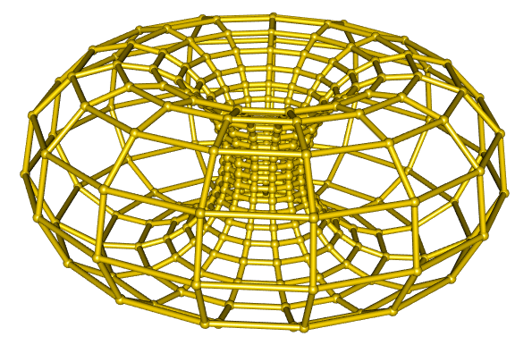
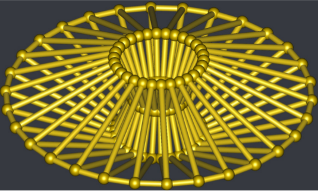

Drawing a duoprism
Posted on July 8, 2019
by Stéphane Laurent
In geometry of 4 dimensions, a duoprism is a polytope resulting from the Cartesian product of two polygons. We show how to draw a duoprism using R, Asymptote and POV-Ray, when the two polygons are regular.
Drawing a duoprism with R
A <- 15
B <- 23
# construction of the vertices
vertices <- array(NA_real_, dim = c(A,B,4))
for(i in 1:A){
v1 <- c(cos(i/A*2*pi), sin(i/A*2*pi))
for(j in 1:B){
v2 <- c(cos(j/B*2*pi), sin(j/B*2*pi))
vertices[i,j,] <- c(v1,v2)
}
}
# construction of the edges
edges <- array(NA_integer_, dim = c(2,2,2*A*B))
dominates <- function(c1, c2){
c2[1]>c1[1] || (c2[1]==c1[1] && c2[2]>c1[2])
}
counter <- 1
for(i in seq_len(A)-1L){
for(j in seq_len(B)-1L){
c1 <- c(i,j)
candidate <- c(i, (j-1)%%B)
if(dominates(c1, candidate)){
edges[,,counter] <- cbind(c1, candidate) + 1L
counter <- counter + 1
}
candidate <- c(i, (j+1)%%B)
if(dominates(c1, candidate)){
edges[,,counter] <- cbind(c1, candidate) + 1L
counter <- counter + 1
}
candidate <- c((i-1)%%A, j)
if(dominates(c1, candidate)){
edges[,,counter] <- cbind(c1, candidate) + 1L
counter <- counter + 1
}
candidate <- c((i+1)%%A, j)
if(dominates(c1, candidate)){
edges[,,counter] <- cbind(c1, candidate) + 1L
counter <- counter + 1
}
}
}
# stereographic projection
stereog <- function(v){
v[1:3] / (sqrt(2) - v[4])
}
# projected vertices
vs <- apply(vertices, c(1,2), stereog)
# plot
library(rgl)
## plot the edges
for(k in 1:(2*A*B)){
p1 <- vs[, edges[1L,1L,k], edges[2L,1L,k]]
p2 <- vs[, edges[1L,2L,k], edges[2L,2L,k]]
shade3d(cylinder3d(rbind(p1,p2), radius = 0.03, sides = 30),
color = "gold")
}
## plot the vertices
for(i in 1:A){
for(j in 1:B){
spheres3d(vs[,i,j], radius = 0.05, color = "gold2")
}
}
Drawing a duoprism with Asymptote
settings.render = 4;
settings.outformat = "pdf";
import solids;
import tube;
size(200,0);
currentprojection=orthographic(4,4,4);
currentlight = light(gray(0.85), ambient=black, specularfactor=3,
(100,100,100), specular=gray(0.9), viewport=false);
currentlight.background = rgb("363940ff");
// lexicographic order ---------------------------------------------------------
bool dominates(int[] e1, int[] e2){
return e2[0]>e1[0] || (e2[0]==e1[0] && e2[1]>e1[1]);
}
// vertices --------------------------------------------------------------------
int A = 30;
int B = 4;
real[][] poly1 = new real[A][2];
for(int i = 0; i < A; ++i){
poly1[i][0] = cos(i/A*2pi);
poly1[i][1] = sin(i/A*2pi);
}
real[][] poly2 = new real[B][2];
for(int i = 0; i < B; ++i){
poly2[i][0] = cos(i/B*2pi);
poly2[i][1] = sin(i/B*2pi);
}
real[][][] vertices = new real[A][B][4];
for(int i = 0; i < A; ++i){
for(int j = 0; j < B; ++j){
vertices[i][j] = concat(poly1[i],poly2[j]);
}
}
// edges -----------------------------------------------------------------------
int[][][] edges;
for(int i = 0; i < A; ++i){
for(int j = 0; j < B; ++j){
int[] e = {i,j};
int[] candidate = {i,(j-1)%B};
if(dominates(e,candidate)){
int[][] edge = {e,candidate};
edges.push(edge);
}
int[] candidate = {i,(j+1)%B};
if(dominates(e,candidate)){
int[][] edge = {e,candidate};
edges.push(edge);
}
int[] candidate = {(i-1)%A,j};
if(dominates(e,candidate)){
int[][] edge = {e,candidate};
edges.push(edge);
}
int[] candidate = {(i+1)%A,j};
if(dominates(e,candidate)){
int[][] edge = {e,candidate};
edges.push(edge);
}
}
}
// stereographic projection ----------------------------------------------------
triple stereog(real[] x, real r){
return (x[0],x[1],x[2])/(r-x[3]);
}
// projected vertices ----------------------------------------------------------
triple[][] vs = new triple[A][B];
for(int i = 0; i < A; ++i){
for(int j = 0; j < B; ++j){
vs[i][j] = stereog(vertices[i][j], sqrt(2));
}
}
// draw the duoprism -----------------------------------------------------------
// draw edges
for(int k = 0; k < edges.length; ++k){
path3 p =
vs[edges[k][0][0]][edges[k][0][1]]..vs[edges[k][1][0]][edges[k][1][1]];
draw(tube(p, scale(0.05)*unitcircle),
material(rgb(255,215,0), emissivepen=gray(0.1)));
}
// draw vertices
for(int i = 0; i < A; ++i){
for(int j = 0; j < B; ++j){
draw(shift(vs[i][j])*scale3(0.1)*unitsphere, rgb(255,215,0));
}
}
Drawing a duoprism with POV-Ray
#version 3.7;
global_settings { assumed_gamma 1 }
#include "colors.inc"
#include "textures.inc"
// camera ----------------------------------------------------------------------
camera {
location <0, 0,-10>
look_at 0
angle 45
}
// light sources ---------------------------------------------------------------
light_source { <0,0,-100> White shadowless}
light_source { <100,0,-100> White shadowless}
// moon ------------------------------------------------------------------------
light_source{
<-1000, 800, 3000>
color White
shadowless
looks_like{
sphere{
<0,0,0>,300
texture {
pigment {
color White
}
normal {
bumps 0.5
scale 50
}
finish {
emission 0.8
diffuse 0.2
phong 1
}
}
}
}
}
// sky -------------------------------------------------------------------------
plane {
<0,1,0>,1 hollow
texture {
pigment {
color rgb <0.01, 0.01, 0.2>
}
finish {
emission 0.5
diffuse 0.5
}
}
scale 10000
}
// the clouds ------------------------------------------------------------------
plane {
<0,1,0>,1 hollow
texture {
pigment{
bozo turbulence 1.3
color_map {
[0.00 rgb <0.24, 0.32, 1.0>*0.6]
[0.75 rgb <0.24, 0.32, 1.0>*0.6]
[0.83 rgb <1,1,1> ]
[0.95 rgb <0.25,0.25,0.25> ]
[1.00 rgb <0.5,0.5,0.5> ]
}
scale 2.5
translate <0,1,0>
}
finish {
emission 0.25
diffuse 0
}
}
scale 5000
}
// fog on the ground -----------------------------------------------------------
fog {
fog_type 2
distance 50
color Gray50
fog_offset 0.1
fog_alt 1.5
turbulence 1.8
}
// sea -------------------------------------------------------------------------
plane {
<0,1,0>, -1 hollow
texture{
pigment{
rgb <.098,.098,.439>
}
finish {
ambient 0.15
diffuse 0.55
brilliance 6.0
phong 0.8
phong_size 120
reflection 0.2
}
normal {
bumps 0.95
turbulence .05
scale <1,0.25,1>
}
}
}
// vertices --------------------------------------------------------------------
#declare A = 23;
#declare B = 29;
#declare poly1 = array[A];
#for(i,0,A-1)
#declare poly1[i] = array[2] {cos(i/A*2*pi), sin(i/A*2*pi)};
#end
#declare poly2 = array[B];
#for(i,0,B-1)
#declare poly2[i] = array[2] {cos(i/B*2*pi), sin(i/B*2*pi)};
#end
#declare vertices = array[A][B];
#for(i,0,A-1)
#for(j,0,B-1)
#declare vertices[i][j] =
< poly1[i][0], poly1[i][1], poly2[j][0], poly2[j][1] >;
#end
#end
// edges -----------------------------------------------------------------------
#macro dominates(e1,e2)
(e2[0]>e1[0]) | ((e2[0]=e1[0]) & (e2[1]>e1[1]))
#end
#declare nedges = 2*A*B;
#declare edges = array[nedges];
#declare k=0;
#for(i,0,A-1)
#for(j,0,B-1)
#local e = array[2] {i,j};
#local candidate = array[2] {i,mod(mod(j-1,B)+B,B)};
#if(dominates(e,candidate))
#local edge = array[2] {e,candidate};
#declare edges[k] = edge;
#declare k = k+1;
#end
#local candidate = array[2] {i,mod(mod(j+1,B)+B,B)};
#if(dominates(e,candidate))
#local edge = array[2] {e,candidate};
#declare edges[k] = edge;
#declare k = k+1;
#end
#local candidate = array[2] {mod(mod(i-1,A)+A,A),j};
#if(dominates(e,candidate))
#local edge = array[2] {e,candidate};
#declare edges[k] = edge;
#declare k = k+1;
#end
#local candidate = array[2] {mod(mod(i+1,A)+A,A),j};
#if(dominates(e,candidate))
#local edge = array[2] {e,candidate};
#declare edges[k] = edge;
#declare k = k+1;
#end
#end
#end
// macros ----------------------------------------------------------------------
#macro rotate4d(theta,phi,xi,vec)
#local a = cos(xi);
#local b = sin(theta)*cos(phi)*sin(xi);
#local c = sin(theta)*sin(phi)*sin(xi);
#local d = cos(theta)*sin(xi);
#local p = vec.x;
#local q = vec.y;
#local r = vec.z;
#local s = vec.t;
< a*p - b*q - c*r - d*s
, a*q + b*p + c*s - d*r
, a*r - b*s + c*p + d*q
, a*s + b*r - c*q + d*p >
#end
#macro StereographicProjection(q)
acos(q.t/sqrt(2))/sqrt(2-q.t*q.t) * <q.x,q.y,q.z>
#end
#macro ProjectedVertices(theta,phi,xi)
#local out = array[A][B];
#for(i,0,A-1)
#for(j,0,B-1)
#local out[i][j] = StereographicProjection(
rotate4d(theta,phi,xi,vertices[i][j])
);
#end
#end
out
#end
// texture ---------------------------------------------------------------------
#declare edgeTexture =
texture {
New_Penny
finish {
ambient 0.01
diffuse 2
reflection 0
brilliance 8
specular 0.1
roughness 0.1
}
};
// draw an edge ----------------------------------------------------------------
#macro Edge(verts,pair1,pair2)
cylinder {
verts[pair1[0]][pair1[1]] verts[pair2[0]][pair2[1]], 0.05
texture { edgeTexture }
}
#end
// draw ------------------------------------------------------------------------
#declare vs = ProjectedVertices(0, 0, 2*frame_number*pi/180);
object {
union {
#for(i,0,nedges-1)
Edge(vs,edges[i][0],edges[i][1])
#end
#for(i,0,A-1)
#for(j,0,B-1)
sphere {
vs[i][j], 0.06
texture { edgeTexture }
}
#end
#end
}
scale 0.5
rotate <90, 0, 0>
translate <0, 0.5, -2>
}
/* ini file
Input_File_Name = Duoprism.pov
Initial_Clock = 0
Final_Clock = 1
Initial_Frame = 0
Final_Frame = 179
Cyclic_Animation = on
*/